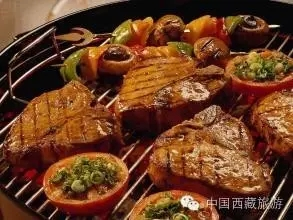

中国新闻网

9月4日，拉萨市群众文化体育中心的台湾美食节现场十分火热，今年中国拉萨雪顿节开幕之际，台湾观光夜市文化协会首次组织近50家美食展商，带着宝岛台湾的美食来到“圣城”拉萨，为高原民众呈现百余种地道台湾风味美食盛宴。
这是台湾很有名的小吃台湾的一口蟹，因为螃蟹它只要食材新鲜，它就非常好吃，随便加点椒盐就很好吃，我们这是坐飞机过来的食材。一口一个嘛，所以叫香酥一口蟹。我感觉很幸福，看到拉萨人民吃到我做的小吃很幸福，要的就是这种效果。
今年，中国拉萨雪顿节于9月1日开幕，展佛、藏戏展演等，首先把当地民众及游客带入浓浓的雪顿节气氛之中，而在拉萨市柳梧新区举行的雪顿节嘉年华，更是让高原民众尝到了地道的台湾、西藏特色小吃之美味。
我们利用土豆把它做成塔形我们叫旋风薯塔，它主要看起来很壮观、漂亮，然后吃起来香香脆脆的，有各种的口味，比如说要辣的就加辣椒粉，要甜的就加沙拉或番茄酱西红柿酱，以满足各位的(口味需求)。
在美食展现场，各种特色小吃琳琅满目，来自台湾的泡菜臭豆腐、五香肉卷、阿里山烤肉、台北手工甜点、炒年糕、香酥一口蟹、黑糖冬瓜茶等百余种特色小吃摊前，吃客如云，生意红火，这让摊主们忙得不亦乐乎。
台湾的五香肉卷在台湾的俗称叫做鸡卷，在每年过年过节都做这种东西，在节庆的时候，还是拜拜的时候都用这种东西在拜拜，所以说我把这个东西带到拉萨来，跟拉萨的乡亲朋友共同分享。
西藏的传统美食同样不逊色，酸奶、藏面、甜茶、咖喱饭、人参果青稞粥、野菌包子等高原民间传统小吃，与台湾美食并驾齐驱，顾客络绎不绝。
据介绍，今年雪顿节嘉年华台湾民俗文化美食展为期七天，届时台湾、西藏两地丰富多彩的特色美食、特色小吃，让广大民众及游客尽享饕餮盛宴。